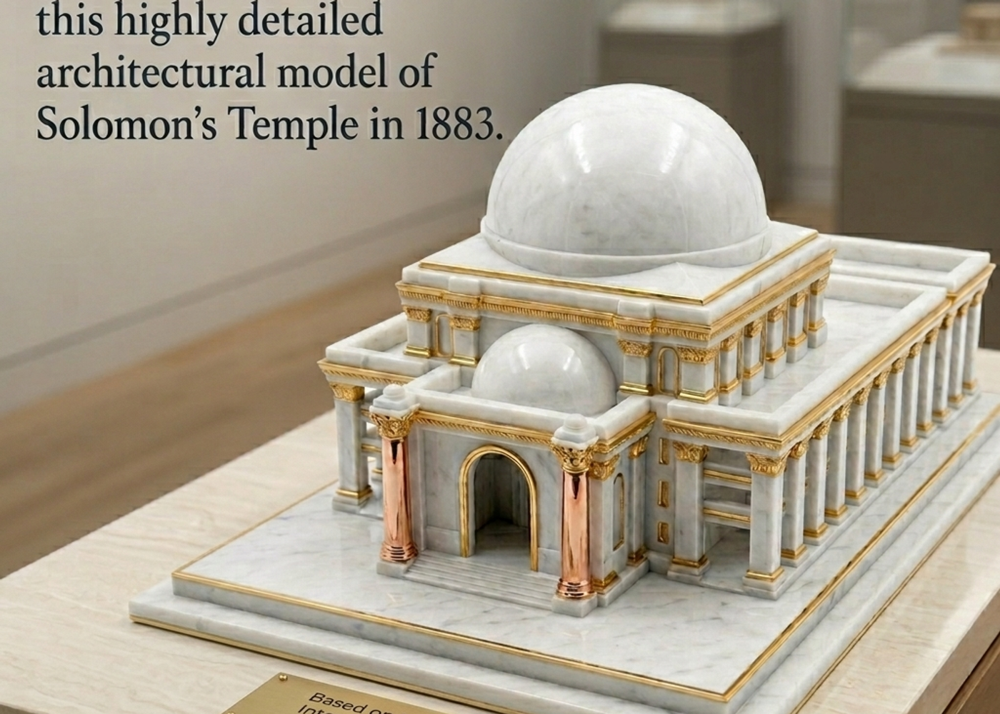
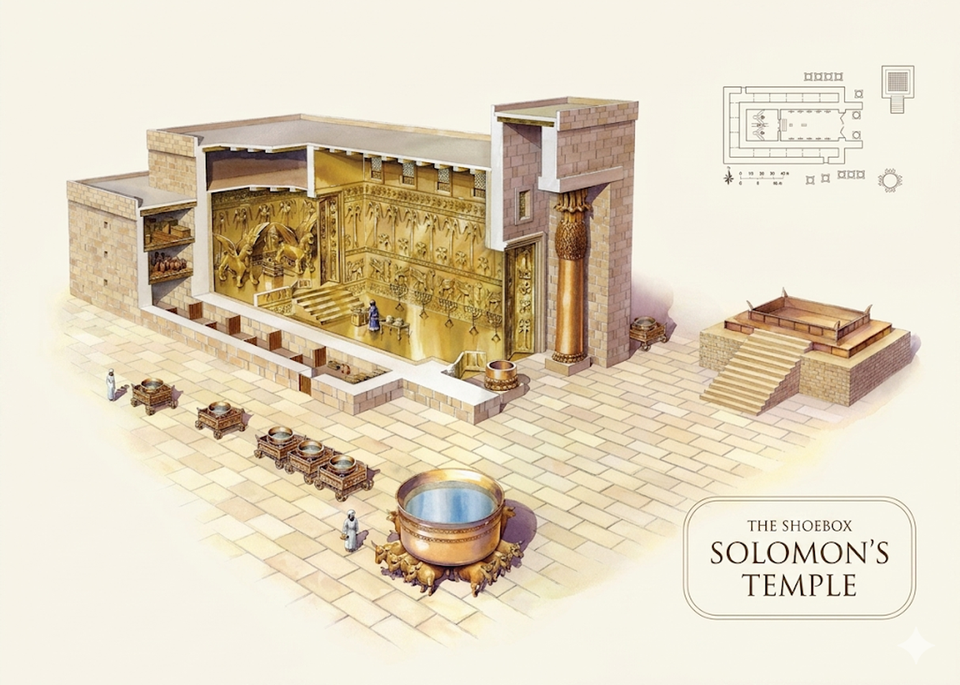
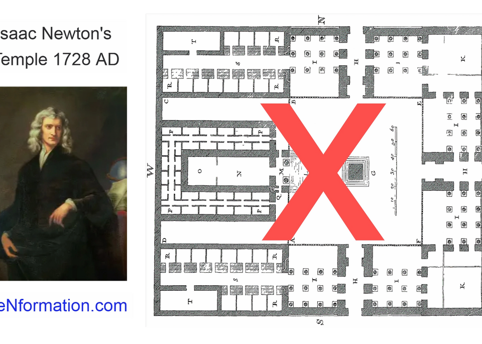

2:22 Church promotes Project Arc. Solomon built in cedar before Babylon taught Israel to love bricks. The goal is not to revise history but to ask whether history revised the Temple.
Every museum wall shows a flat stone shoebox. Project Arc asks whether Solomon's house was assembled from a pattern already given, not invented after exile among Babylon's brick gates.
Project Arc notes a critical sequence. Solomon's Temple was completed around 959 BC, before Babylon's captivity. The Second Temple, built after return from exile, records different proportions: Solomon's house at 60 × 20 × 30 versus the Second Temple at 60 × 60. When the foundation of the Second Temple was laid, elders who had seen the first house wept aloud (Ezra 3:12). Haggai later asked who remembered the first glory (Haggai 2:3). Project Arc asks whether they mourned more than size. Perhaps the pattern itself had been forgotten.
The Ishtar Gate and many post exilic reconstructions share brick monumentalism: flat walls, elevated gateways, cuboid symmetry. Project Arc explores whether that Babylonian lens was laid backward onto Solomon's cedar and hewn stone.


Project Arc lists the internal breakdown: Holy Place 40 × 20, Most Holy Place 20³ cube, side chambers expanding 5, then 6, then 7 cubits wide as they rise. The stones were shaped before they arrived. No hammer on the mount. The builders assembled a pattern already given.
The molten sea sits at the threshold: ten across, thirty around. Pi at the door. That is Project Arc's reason to ask whether circumference belongs in the grammar of this house.
On Renformation.com, Project Arc invites readers to return to 1 Kings without forcing the text into familiar shoebox assumptions. They highlight Thomas Newberry's 1883 dome model and Henry Sulley's 1887 Ezekiel temple vision as evidence that nonlinear readings existed long before modern debate.
Project Arc connected Solomon's cubits to Newberry's 1883 dome model and to the grief of elders at the Second Temple foundation, when the pattern they remembered no longer matched what was being laid.
Main house 60 × 20 × 30 cubits. Holy Place 40 × 20. Most Holy Place 20³ cube. Side chambers 5 → 6 → 7 cubits wide by level.
Recorded at 60 × 60 for width and height in Project Arc's comparison. Different generation, different materials, different architectural memory after Babylon.
10 cubits brim to brim. 30 cubits around. Pi greeting worshipers before entry in Project Arc's reading.
Project Arc's invitation is consistent across every structure page: let Scripture speak before tradition speaks for it.
Project Arc publishes handcrafted models and teaching media on their Solomon's Temple page. 2:22 Church may host a local walkthrough later at blog-assets/study/solomons-temple-3d.mp4.
See Project Arc models at Renformation.com
Primary source: Renformation.com / Project Arc Solomon's Temple. Diagrams on this page are theirs. Back to the Study hub. Next: Heavenly Jerusalem. Truth 11 in Our Story.